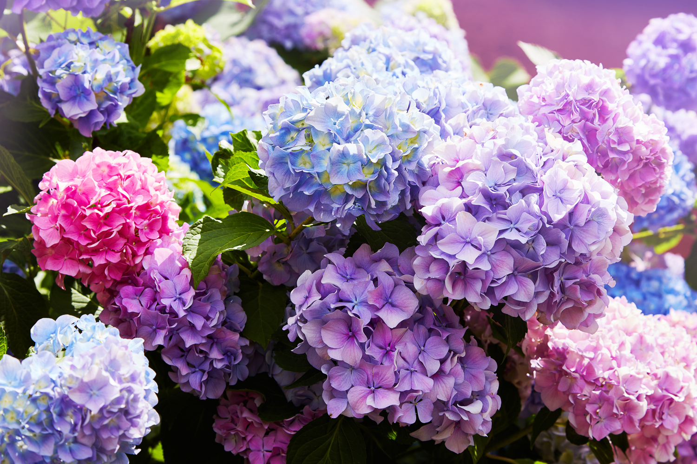

Flowers
-

Purple Echinacea
Echinacea purpurea is an herbaceous perennial up to 120 cm (47 in) tall by 25 cm (10 in) wide at maturity. Depending on the climate, it blooms throughout summer into autumn. Its cone-shaped flowering heads are usually, but not always.
See more -

Azalea
Azaleas are generally slow-growing and do best in well-drained acidic soil (4.5–6.0 pH).[3] Fertilizer needs are low. Some species need regular pruning. Azaleas are native to several continents including Asia, Europe and North America.
See more -

Ortensia
l genere comprende diverse specie di piante legnose arbustive. La particolarità di questa pianta sono i fiori, riuniti in infiorescenze più o meno sferiche, dette corimbi o pannocchie, che portano fiori per lo più sterili, soprattutto quelli esterni.
See more